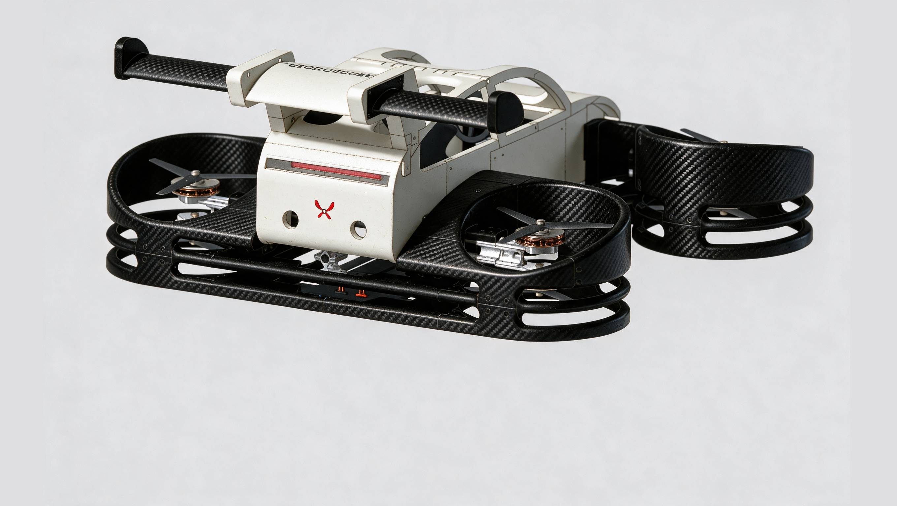

The first eVTOL vehicle designed from the ground up around an open airspace protocol. Ducted fan tri-foil architecture. Electric propulsion. LAPP-native flight stack.

Most eVTOL vehicles are designed first and then retrofitted to whatever airspace regulations eventually emerge. The Aeroboticar is designed the other way around. Every specification — climb rate, energy envelope, communication stack, vertical separation tolerance — is derived from the requirements of the Lorenz Airspace Protocol.
The result is a vehicle that is not just compatible with dense urban airspace operations, but native to them. The Aeroboticar is the reference implementation that proves the protocol works in physical flight — the way the original iPhone proved multi-touch was viable at scale.
The aircraft uses a ducted fan tri-foil architecture with a lift-generating rear wing for efficient forward flight. Electric propulsion. Carbon-composite airframe. Currently at 1:5 scale; full-scale development in progress.
Founded in New Jersey with a single mission: to build a flying car that people actually want to use. Early concept work and market research began.
U.S. Design Patent D1078585-S awarded for the Aeroboticar form factor — the distinctive tri-foil ducted fan silhouette.
Patent · GrantedFirst physical prototype at one-fifth scale completed. Used for aerodynamic testing, control system validation, and design iteration.
Prototype · CompleteThe Lorenz Airspace Protocol — a market-based coordination framework for eVTOL traffic — published as a preprint and filed as a utility patent application. Reference simulator released publicly.
Patent · PendingFull-scale vehicle engineering underway. Airframe, propulsion integration, flight control stack. Strategic partnerships with aerospace research institutions being pursued.
In ProgressLorenz is independently funded. Every pre-order, every piece of merch, every founding supporter signup compounds into engineering hours, materials, and infrastructure. You're not buying a product — you're signaling demand and making the build happen faster.
No spam. No marketing noise. Just real updates when there's something real to share — prototype milestones, test flights, major partnerships.